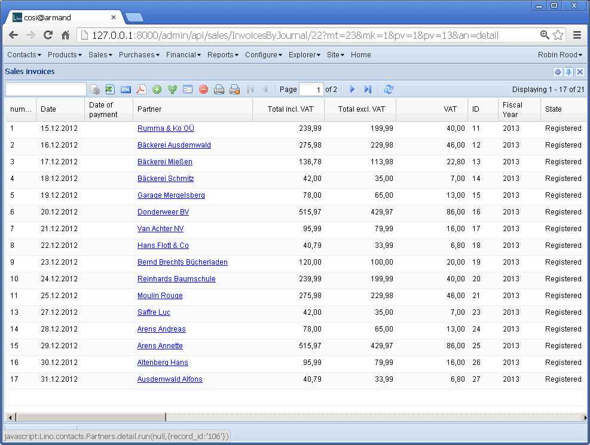
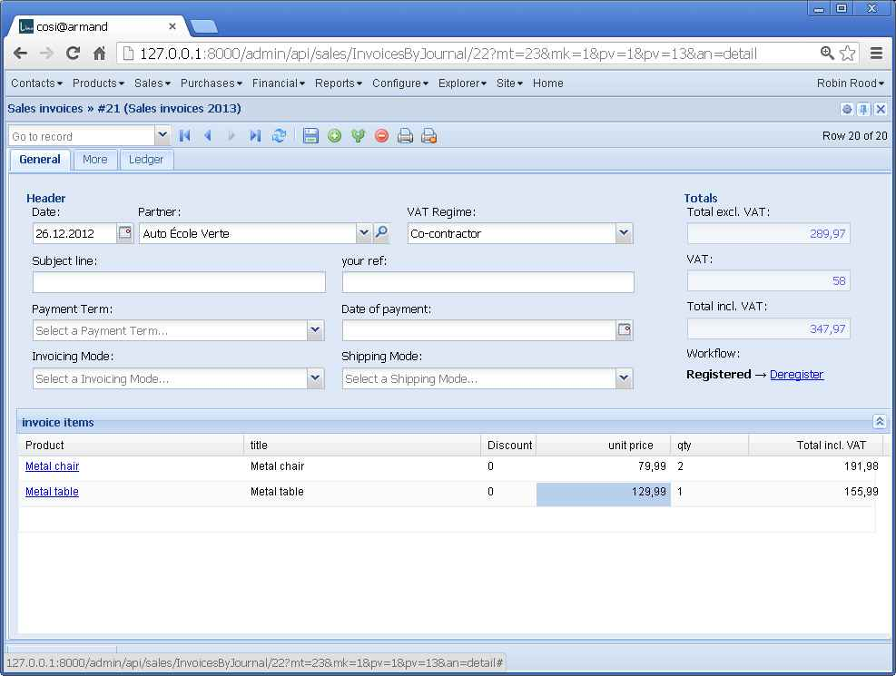
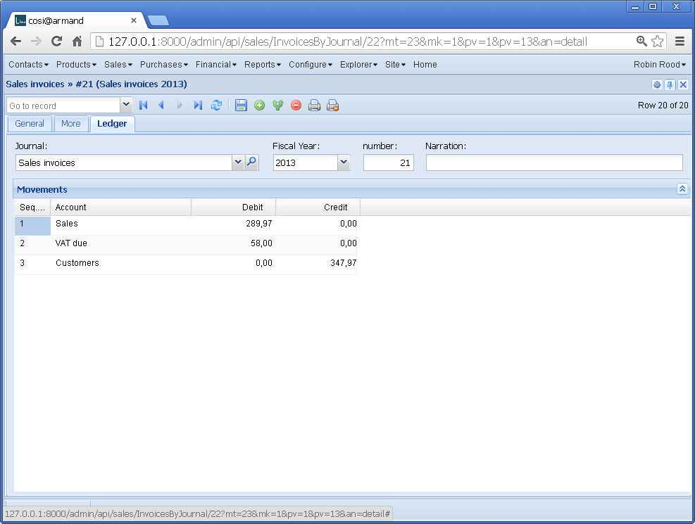

20130114¶
Sales invoices¶
Today I had a bug-hunting tour in lino.projects.cosi,
more precisely at the sales invoices.
Saving a
sales.Invoice
whose state is
draft
returned no available actions (“<p><b>Draft</b></p>”)
in workflow_buttons
while after clicking the Refresh button they showed up correctly.
This was because
get_workflow_actions
called
get_actions
with the requesting ar.bound_action.action
(for the Refresh button this is a ShowDetailAction
while for the Save button it’s a SubmitDetail` instance).
Solution:
Changed lino.core.actors.Actor.get_workflow_actions()
But, oops I almost forgot that we’re in guinea pig testing mode. And that’s again a change to the framework which is not allowed until the definitive release. Bend the rules once more and let this change pass? Go back in time and release yesterday? None of both: since the change is only one line of code, I manually restore the previous state, do the official releases, then continue.
Official release¶
So here they are: Lino /releases/1.5.4 is there:
running upload
Submitting docs/dl\lino-1.5.4.tar.gz to http://pypi.python.org/pypi
Server response (200): OK
Submitting docs/dl\lino-1.5.4.zip to http://pypi.python.org/pypi
Server response (200): OK
Oops, Lino-Welfare 1.0.8 didn’t pass at the first attempt:
Submitting ../lino/docs/dl\lino_welfare-1.0.8.tar.gz to http://pypi.python.org/pypi
Upload failed (403): You are not allowed to edit 'lino_welfare' package information
Submitting ../lino/docs/dl\lino_welfare-1.0.8.zip to http://pypi.python.org/pypi
Upload failed (403): You are not allowed to edit 'lino_welfare' package information
This was because I called setuptools.setup() with a name of “lino_welfare” instead of “lino-welfare”.
After the release, besides restoring
lino.core.actors.Actor.get_workflow_actions(),
I fiddled again with setup.py.
Opened docs/tickets/69.
Sales invoices (continued)¶
Another subtle problem solved:
the total fields of a
sales.Invoice
shouldn’t be editable.
The total fields of a sales invoice should of course always be the sum of the invoice’s items. Opened new ticket docs/tickets/68. Currently, users must hit the Save button of their invoice in order to see the updated totals.
Changed execution order of
full_clean
and
before_ui_save
because it makes a difference when
saving non-dirty records.
We agree that before_ui_save should not run in this case,
but it was counter-intuitive that full_clean wasn’t called either.
What should happen when the user hits the Save button of a detail form which has no modifications? The intuitive meaning of this is “to make sure everything is really okay with that record”.
Why should users doubt about whether “everything is okay”? One case where this makes sense is to update the totals of a sales invoice when you have modified some item. At least as long as Lino doesn’t do this automatically.
Added a new parameter
auto_fit_column_widths
which will set the forceFit config option
of ExtJS’s Ext.grid.GridView.
Added .x-form-num-field { text-align: right;} to /media/extjs/lino.css after reading NumberField and Right Alignment
[23:00] I start to be satisfied. Some quick screenshots:
  
{kind=link}
{kind=link}
{kind=link}